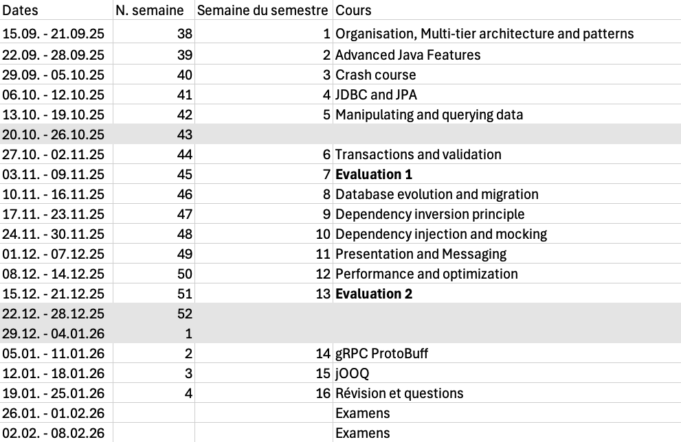

AMT
Organisation
Bertil Chapuis
## <i class="fas fa-users"></i> Staff - Bertil Chapuis - Gaétan Zwick
## <i class="fas fa-window-restore"></i> Prérequis L'étudiant-e doit connaître et savoir utiliser les notions suivantes : - Base de données relationnelles (BDR) - Programmation orientée objets (POO) - Développement d'applications Internet (DAI)
## <i class="fas fa-tasks"></i> Objectifs Le modèle d'architecture multi-tiers s'est imposé dans beaucoup d'applications. Nombreux sont les systèmes qui sont construits sur la base de ce modèle en couches. Des plateformes et des environnements de développement ont été créés pour faciliter la mise en place de ces systèmes.
## <i class="fas fa-tasks"></i> Objectifs A l'issue de cette unité d'enseignement, l'étudiant-e sera capable de : - présenter les concepts généraux d'une architecture multi-tiers - décrire le rôle d'un ORM - comprendre l’inversion de contrôle et l'injection de dépendances - utiliser le modèle de conception MVC - mettre en œuvre des APIs de type RPC et REST - comprendre l’utilité des standards Java Entreprise (MicroProfile, Jakarta, JPA, JAX-RS, JMS, etc.) - utiliser une plateforme comme Spring Boot, Quarkus, Micronaut, ou Helidon - mettre en oeuvre des pratiques d’ingénierie logicielle spécifiques aux applications multi-tiers - automatiser les tests, l'intégration et la livraison d'une application multi-tiers
## <i class="fas fa-window-restore"></i> Outils d'enseignement **Support de cours:** [AMT Classroom](https://amt-classroom.github.io) **Questions:** [GitHub Discussions](https://github.com/orgs/amt-classroom/discussions) **Laboratoires:** [GitHub Classroom](https://classroom.github.com/classrooms/139238695-amt-classroom-2025) **Communications:** [Microsoft Teams](https://teams.microsoft.com/l/team/19%3A6gDj8XWYG5kOo3EyboynoJ_fGN5f2i-Uxjv5GyGX7Mk1%40thread.tacv2/conversations?groupId=39eac153-e131-4a8a-99d7-7fcea5e30a9b&tenantId=a372f724-c0b2-4ea0-abfb-0eb8c6f84e40) **Evaluations:** [Plateforme Eval](http://eval.iict-heig-vd.in/) *Assurez-vous d'avoir accès à ces outils dès maintenant.*
## <i class="fas fa-calendar"></i> Format d'une séance 3 périodes organisées comme suit: - Réponse aux questions soulevées sur [GitHub Discussions](https://github.com/orgs/amt-classroom/discussions) - Correction des laboratoires sur [GitHub Classroom](https://classroom.github.com/classrooms) - Cours théorique avec quelques exercices pratiques *N'hésitez pas à poser des questions pendant le cours.*
## <i class="fas fa-calendar"></i> Laboratoires Les conditions seront annoncées au début de chaque laboratoire. Les laboratoires non notés sont à réaliser de manière individuelle. Les laboratoires notés sont à réaliser en groupe de 3 ou 4 étudiants.
## <i class="fas fa-award"></i> Evaluations Le calendrier et les conditions et seront précisés au cours du semestre. - 1 examen final d'une durée de 2 heures - 2 tests d'une durée totale d'au moins 3 périodes - Au moins 3 laboratoires notés dont un travail d’approfondissement
Programme (indicatif)
